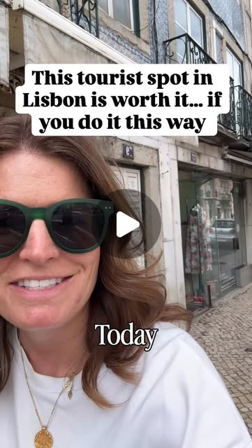

Instagram Reel

The line outside Pasteis de Belem is legendary. And yes, it is worth it. If y...
video transcript (enriched by ClaudeClaw)
Summary
[CAPTION]
The line outside Pasteis de Belem is legendary. And yes, it is worth it.
[CAPTION]
The line outside Pasteis de Belem is legendary. And yes, it is worth it. If you do it right.
First, a little history. Because this is not just a custard tart.
In the early 19th century the monks of the Jeronimos Monastery in Belem were using egg whites to starch their robes. That left them with a lot of leftover yolks. So they made tarts and sold them to visitors arriving by steamboat to make ends meet. When the monastery closed in 1834 the recipe was sold to a nearby sugar refinery. In 1837 the Fabrica de Pasteis de Belem opened right next door and has been making the original tart ever since.
The secret recipe has never left the building. The master bakers who know it sign a contract of confidentiality and take an oath. It has not changed in nearly 200 years.
Pastel de nata and Pastel de Belem are not the same thing. Every custard tart in every cafe across Portugal is a pastel de nata. But there is only one Pastel de Belem and it is only made in one place in the world. The name is trademarked. The recipe is secret. And the difference in taste is real.
Are they worth the queue? Yes. But you do not have to stand in it.
Watch the reel to see how we skip the line every time. 🙌
🇺🇸🇵🇹Hi, I’m Alison, an American mom living in Portugal with my husband and two kids aged 6 and 9. Before Portugal we lived in Bali and Singapore, so we know the ups and downs of moving a family to a new country. I love helping families considering a move to Portugal, so on any post just comment “Move to Portugal” and I’ll connect with you personally. Follow along to see what life in Portugal is really like.
[VIDEO]
Today we are in Valem with my mother-in-law to try the famous um pastiche de belling. And I just want to give you a tip on how to do it the right way. Okay, so over here is like the really famous store. And you can see there's like you. If you walk down this way to this store right here, there's never a line and it's really easy to get in, and it's the same thing and it's really cute inside. So go here.
View original on Instagram Reel →